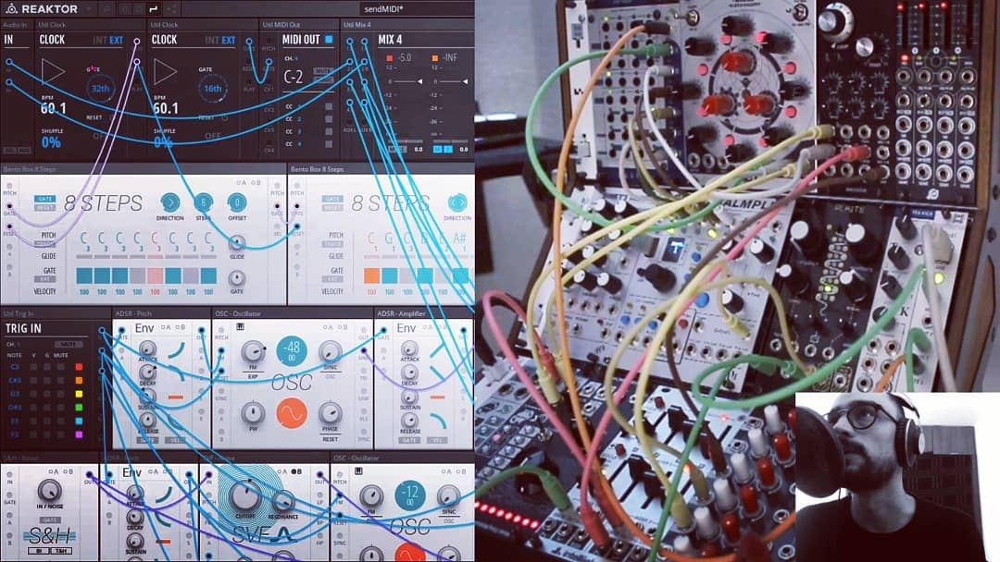

I'm an audio Engineer and electronics technician. Here's a bit of what I do.
Audio engineer and electronics technician with +20 years of experience in the music industry. Skilled in event production, audio and video installations and creative audio production. Recognized for exceptional attention to detail, organizational skills, and a strong commitment to quality.
I create music using a variety of electronic instruments and sound design techniques.
I wrote this song and made a video for it using royalty-free videos.
I created this patch on Bespoke Synth.
Here is another patch I made on VCV Rack.
I provided help with curating and puting together this exhibition at Centro Multimedia.
It was a great experience working with artists and curators to bring this project to life.
Here are some of my sound design projects.
In this project I recorded and edited my own voice.
On this next video I recorded and edited my own voice, and added sound effects.
In this tutorial, I demonstrate how to create subtractive synthesis using VCV Rack, a powerful modular synthesizer software.
If you'd like to get in touch, please email me at hola.elephlab@gmail.com
Back to Top ↑